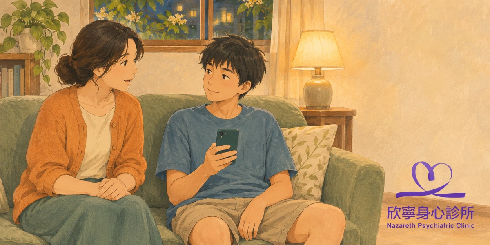

談青少年滑短影片，也問想停下來時有多難
和青少年聊短影片，可以同時留意觀看時間與使用時的掌控感。
滑了多久先聊起想停多難別心急
先掌握三個重點
- 聊短影片時，可以同時問孩子看了多久、想停時有多難，也了解這樣的使用方式有沒有影響到睡眠、上課或原本想做的事。
- 觀看時間長和難以停下只有部分重疊。追蹤研究發現兩者持續偏高與心理困擾有關，仍無法判定短影片造成了這些困擾。[1]
- 挑彼此有空的時候，問孩子最近哪一次原本想停，後來卻又滑了一陣。一起想一個他願意試的停點，也聽聽最近有沒有別的心事。
若孩子現在有自殺念頭、已有自殺計畫或剛有自殺行動，請立即尋求醫療協助。 請陪同前往急診，或撥打 119 叫救護車。
段落導覽
飯後滑個不停，可以怎麼開口？
晚飯後，阿哲靠在沙發上滑短影片。媽媽收完碗回到客廳，看見他又滑過幾支影片，便坐到旁邊問：「你原本打算看多久？」等阿哲抬起頭，她再問：「你剛才有想過什麼時候停嗎？」
同樣是飯後看一陣子，阿哲可能是特地留時間看喜歡的創作者，也可能早就想去洗澡，手卻一直滑下一支。若他一時答不出來，可以等兩人都比較有空，再請他回想最近的一次。
如果他說「我只是想放鬆一下」，可以先聽聽今天發生了什麼。有時他說完才想起，原本還打算做一件事。我們可以接著問他想先做哪件事，或明天遇到同樣的情況時，有沒有自己想試的做法。
孩子說「停不下來」，可以了解什麼？
掌控感是指孩子想停或需要轉去做別的事時，能不能照自己的意思停下來。 可以請孩子挑兩個晚上來比較，例如一晚看到自己想看的內容就關掉，另一晚卻比原先打算的時間多看了很久。
孩子偶爾看超過原訂時間，可以先了解當天的情況。若常想停卻停不下來，或反覆拖到很晚才睡，值得看看這個模式出現多久、在哪些時段最常發生，以及白天精神和日常作息有沒有受影響。
手機的使用紀錄可以幫忙回想大致花了多少時間。若孩子願意一起看，可以請他說說那段時間用手機做了什麼。同一支手機也用來找資料、聊天和聽音樂，一天的總數很難回答他看短影片時的感受。
同時看時間與掌控感，追蹤研究發現什麼？
一項在中國南方逐年進行三次調查的追蹤研究，分析一萬多名青少年的資料。第一年，約四分之一只在觀看時間或難以控制使用其中一項偏高，約一成兩項都偏高。同時問這兩件事，可以聽見不同的使用經驗。[1]
與兩項都偏低的青少年相比，兩項轉為或持續偏高的人，到第三年較常回報自殺念頭、自殺嘗試、無自殺意圖的自傷，以及情緒或行為困擾。研究比較的是一群人的結果，孩子的安全仍需依當下情況判斷。[1]
研究所說的「無自殺意圖的自傷」，是指當事人傷害自己時，沒有意圖結束生命。研究將這類自傷與自殺嘗試分開記錄。研究的使用分組也各有特定用途，家長可以從時間和掌控感開啟對話，再了解孩子近來的生活變化。[1]
孩子心情變差，能歸因於短影片嗎？
這項觀察研究無法判定短影片造成了心理困擾，也無法用來決定每個孩子適合看幾分鐘。觀看時間、使用感受和心理情況多由青少年自己填報，可能受回憶影響。研究對象來自中國南方，套用到台灣孩子時也要考量生活環境。[1]
另一項美國青少年的追蹤研究，觀察的是社群媒體、手機和電玩等更廣的使用情況。使用難以控制且持續偏高或逐漸上升，和自殺念頭或相關行為有關。兩篇研究看的使用活動不同，解讀時要保留這項差異。[2]
如果孩子最近常睡不好、在學校遇到挫折，或跟朋友相處有壓力，可以聽聽這些事是什麼時候開始的。有些孩子在心情不好時用短影片分心，也有孩子為了多看幾支而晚睡。問清楚先後順序，有助於一起找需要支持的地方。
對話談到心情或自傷時，怎麼接下去？
如果孩子提到自己很難熬，可以先慢一點，聽他把話說完：「謝謝你願意告訴我。最近什麼事最難受？」當他提到想消失或傷害自己時，可以平靜地問：「你最近有想過自殺嗎？現在有這個念頭嗎？」並聽他回答。[3]
若孩子曾有自傷，即使他說當時沒有想要結束生命，仍應儘快聯絡兒童青少年精神科或身心科評估。若他現在有自殺念頭、已有計畫或剛有自殺行動，請立即尋求醫療協助。請留在孩子身邊，陪同前往急診，或撥打 119 叫救護車。[3][4]
三個可以一起開始的具體做法
-
先聊一個晚上
挑一個彼此有空的時刻，問「昨晚你原本想看到什麼時候？」若一時聊不下去，可以只問「你覺得哪一段最難停？」聽完就先收在這裡。
-
約一個容易做到的停點
請孩子選一個他想試的停點，例如洗澡前把影片關掉，然後一起試一個晚上。若這一步太難，可以先試看到一支有趣的影片結束時，放下手機片刻，再決定接下來要做什麼。
-
留意一次最難停的時候
隔天一起回想，當時是想多看一支、還沒想好接著做什麼，還是心裡有點煩。若孩子不想細談，可以先讓他用自己的話說一個感受，或約他願意的時候再談。
什麼時候需要求助？
可以安排專業評估
如果長期難以停下，明顯影響睡眠、上學或人際，或孩子持續低落、退縮，可以預約兒童青少年精神科或身心科。如果曾經自傷或最近提過自殺念頭，即使當下沒有這個念頭，也請儘快聯絡醫療專業人員。[3]
需要立即醫療協助
如果孩子現在有自殺念頭、已有自殺計畫、剛有自殺行動，或自傷導致明顯傷勢、無法確保當下安全，請立即尋求醫療協助。請留在孩子身邊，陪同前往最近的急診，或撥打 119 叫救護車。[3][4]